Miss Status Holding Registers (MSHR)
本文最后更新于：October 29, 2020 pm
简要介绍
miss status holding register (MSHR) 主要用来处理non-blocing cache中cache miss的情况，因此也被称为miss buffer
这里你可能就会对non-blocking cache感到疑惑了。什么是non-blocking cache呢? (不疑惑的话当我没说, 啊这…)
当我们发出一个memory request, 然后就会在cache中寻找这个地址。如果这个地址不在cache中，那么就是一个cache miss。所谓的blocking cache, 当出现cache miss后, 后续对cache的请求将被阻塞，直到处理完了cache miss的情况。很显然，这样很影响效率。
因此，non-blocking cache出来制止这种 “stop the world”的行为。他允许processer继续处理指令，即使存在cache miss。他很像是pipelining the memory system, 可以达到hiding memory latency的效果。下图就是这两者的对比
是什么导致了blocking cache和non-blocking cache的这种差别呢？ 我认为，这是因为blocking cache只能存一个request的信息，而non-blocking cache可以存多个request的信息，关键是可以将miss信息都存储起来。将miss信息存在哪里了？—-> MSHR
MHA and MSHR Entry
MSHR track的information为
- outstanding cache misses
- Pending load/store accesses that refer to the missing cache block
下图左边展示了banked cache的Miss handling architecture, 每个cache bank都有他自己的MSHR
右边展示了MSHR的内部结构。这个MSHR file是一个比较小的全关联cache, 他可以处理n个miss。
每个MSHR entry包含的信息如下
- 引发miss的cache block address
- target information (存储了该block的pending load/store的信息)。
- 一个valid bit。这个valid bit标志该MSHR是否正在使用中。如果这个MSHR file所有的valid bit都置1了，那么再出现miss的话，MSHR就无法处理了，只能block。
下图是一个更加详细的MSHR Entry的结构, 后面更详细的展示了target information的内容
- 是不是valid
- 请求的type是什么 (load or store)
- 如果requested data比一整个cache line要小的话，那么就需要存储requested data在该cache line的offset。
- 返回给哪个哪个CPU的哪个destination register或者是store buffer entry address

MSHR Operation
下图展示了Non-blocking cache处理memory access的过程， 其中 [h1]-[h3]展示了cache hit的过程，[m1]-[m`6]展示了cache miss的过程
cache hit的情况
process发送request给cache, cache hit, 然后将data返回
cache miss的情况
process发送request给cache, cache中找不到对应地址，cache miss
cache miss时, 查找MSHR看request block在不在里面。
- 如果不在，则需要分配一个新的MSHR Entry， 还会给memory 发送request, 请求数据。
- 如果在，就在对应的MSHR Entry里面写入该load或者store的信息，他不需要给memory发送request了，因为已经有人去request了，他只要安静地等着就行了。
- 如果没有多余的Entry了，就会引发stall。
数据从memory返回后
- 他会查看哪些load/store指令正在等待他，然后把数据forward给这些load/store unit，并将这些load/store unit从MSHR中deallocate
- 然后将数据写入cache或者MSHR
- 写完了最后一个cache subblock后，就deallocate MSHR
references
本博客所有文章除特别声明外，均采用 CC BY-SA 4.0 协议 ，转载请注明出处！